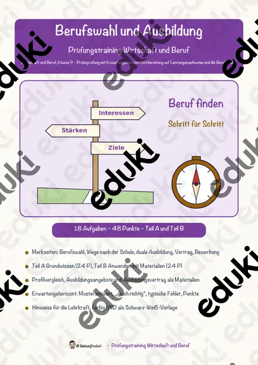
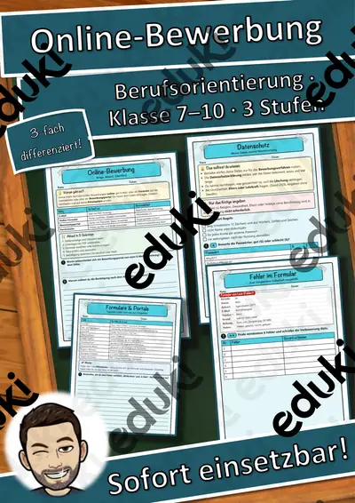
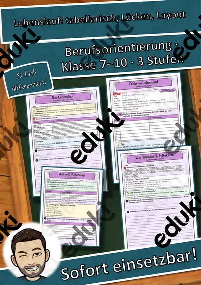
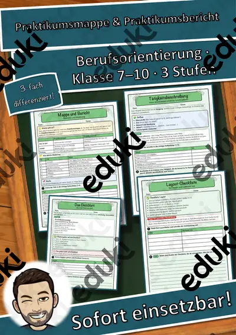
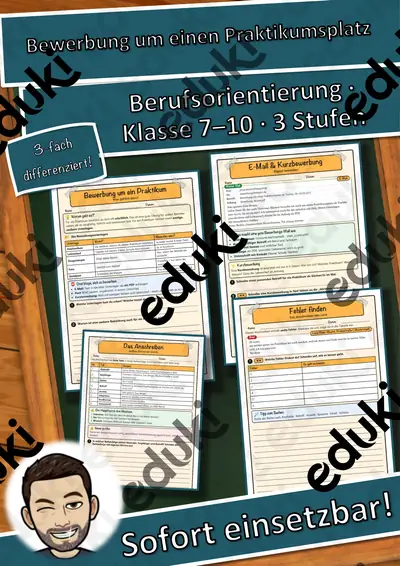
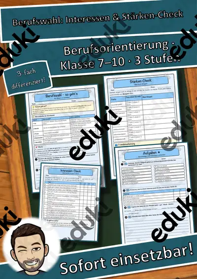

Bewerbung und Praktikum: Arbeitsblätter für Klasse 8–10 (Deutsch)
Bewerbung und Berufswahl bereiten auf den Übergang in Ausbildung vor. Typische Bausteine sind Lebenslauf, Anschreiben, Einstellungstest und Vorstellungsgespräch.
Als roter Faden eignen sich Lebenslauf, Anschreiben und Deckblatt; Einstellungstest, Vorstellungsgespräch und Praktikum lassen sich je nach Klassenstufe zuschalten.
In den Lehrplänen der Länder ist das Thema im Fach Deutsch verankert, meist in der Sekundarstufe I (Klasse 8–10). Die Jugendlichen erstellen vollständige Bewerbungsunterlagen und üben ein Gespräch.
Eine Reihe zu Bewerbung und Praktikum lässt sich so gliedern: erst Lebenslauf erarbeiten, dann Anschreiben anwenden, später Einstellungstest und Vorstellungsgespräch vertiefen. Zu jedem Material gehört eine Musterlösung, die Korrektur und Selbstkontrolle erleichtert. Zur Differenzierung eignen sich die Lesespurgeschichten mit ihren drei Niveaustufen.
Die Auswahl zum Thema umfasst derzeit 22 Titel, zum Beispiel Bewerbung & Praktikum, Materialpaket Bewerbung Anschreiben, Deckblatt und Praktikumsmappe & Praktikumsbericht. Dazu zählen 1 Lesespurgeschichte und 1 Prüfungstraining für Klasse 7–10. Ein Probegespräch mit Beobachtern und Feedbackbogen ist die wirksamste Übung.
Das gehört zum Thema
Passende Arbeitsblätter und Materialpakete

Bewerbung & Praktikum – Paket Vorstellungsgespräch, Test & Vertrag: 6 Einheiten (Klasse 7–10)

Bewerbung & Praktikum – Paket Bewerbungsunterlagen: 5 Einheiten (Klasse 7–10)

Bewerbung & Praktikum – Paket Praktikum (Berufswahl bis Reflexion): 8 Einheiten (Klasse 7–10)

Materialpaket Bewerbung Anschreiben, Deckblatt, Lebenslauf, Dritte Seite - Bewerbung - Praktikum

Die Bewerbung – Anschreiben, Lebenslauf, Vorstellungsgespräch – Lesespurgeschichte mit Rätselaufgaben (Klasse 9)

Berufswahl und Ausbildung – Prüfungstraining Wirtschaft (Klasse 9)

Praktikumsmappe & Praktikumsbericht – Bewerbung & Praktikum, 3 Stufen, mit Hilfen & Lösungen (Klasse 7–10)

Einstellungstest: Deutsch, Mathe & Logik – Bewerbung & Praktikum, 3 Stufen, mit Hilfen & Lösungen (Klasse 7–10)

Vorstellungsgespräch: Auftreten, Körpersprache & Rollenspiele – Bewerbung & Praktikum, 3 Stufen, mit Hilfen & Lösungen (Klasse 7–10)

Vorstellungsgespräch: Fragen, Antworten & Gegenfragen – Bewerbung & Praktikum, 3 Stufen, mit Hilfen & Lösungen (Klasse 7–10)

Online-Bewerbung – Bewerbung & Praktikum, 3 Stufen, mit Hilfen & Lösungen (Klasse 7–10)

Bewerbungsfoto, Mappe & E-Mail-Bewerbung – Bewerbung & Praktikum, 3 Stufen, mit Hilfen & Lösungen (Klasse 7–10)

Lebenslauf: tabellarisch, Lücken, Layout – Bewerbung & Praktikum, 3 Stufen, mit Hilfen & Lösungen (Klasse 7–10)

Anschreiben: Formulierungshilfen & Fehler finden – Bewerbung & Praktikum, 3 Stufen, mit Hilfen & Lösungen (Klasse 7–10)

Anschreiben: Aufbau & Bausteine – Bewerbung & Praktikum, 3 Stufen, mit Hilfen & Lösungen (Klasse 7–10)

Bewerbung und Praktikum Praktikumsmappe und Praktikumsbericht

Bewerbung um einen Praktikumsplatz – Bewerbung & Praktikum, 3 Stufen, mit Hilfen & Lösungen (Klasse 7–10)

Berufswahl: Interessen & Stärken-Check – Bewerbung & Praktikum, 3 Stufen, mit Hilfen & Lösungen (Klasse 7–10)

Bewerbung Dritte Seite- Bewerbung

Bewerbung Anschreiben - Bewerbung

Bewerbung Lebenslauf - Bewerbung

Bewerbung Deckblatt - Bewerbung
Häufige Fragen
Für welche Klassenstufe passen die Arbeitsblätter zu Bewerbung und Praktikum?
Passend sind Klasse 7–10. Von den 22 Titeln wenden sich die meisten an Klasse 9, einige lassen sich differenzierend auch in benachbarten Stufen nutzen.
Welche Inhalte decken die Materialien zu Bewerbung und Praktikum ab?
Die Materialien arbeiten an Lebenslauf, Anschreiben und Deckblatt und gehen dann weiter zu Einstellungstest, Vorstellungsgespräch und Praktikum. Vorab lohnt ein Blick in den Lehrplan des eigenen Bundeslandes.
Wie setze ich Bewerbung und Praktikum im Unterricht ein?
Beginnen Sie mit einem Einstieg zu Lebenslauf und ergänzen Sie nach Bedarf. Ein Probegespräch mit Beobachtern und Feedbackbogen ist die wirksamste Übung.
Mehr Material nach Fach und Klasse
Verwandte Lehrplanthemen
- Berufe und Berufswahl (Sachunterricht, Klasse 1–10)
- Literatur: Kurzgeschichte, Roman und Jugendbuch (Deutsch, Klasse 7–10)
- Inhaltsangabe und Textarten (Deutsch, Klasse 6–10)
- Gedichte und Balladen (Deutsch, Klasse 3–10)
- Lesen und Leseverstehen (Deutsch, Klasse 1–6)